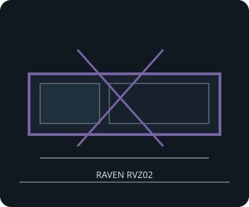

[ RAVEN RVZ02 // SLIM RISER CHASSIS ]
SilverStone Raven RVZ02
380 × 87 × 370 mm (W × H × D), 12 L; a Mini-ITX slim chassis for SFX/SFX-L power, with a two-slot riser and optional slim optical drive.

FITMENT CAVEAT: This record describes the named model only. Published maxima can depend on revision, brackets, fan/radiator position, PSU cable routing and drive configuration; verify the exact manual and parts before purchase or assembly.
Specifications & fit
| Exact model | SilverStone Raven RVZ02 |
|---|---|
| Motherboard sizes | Mini-ITX only (170 × 170 mm); expansion cards attach through the included two-slot riser/card holder. |
| PSU type and fit | SFX or SFX-L. Confirm cable exit and drive-tray clearance for the exact supply length. |
| GPU length and thickness | Up to 330 mm long and 121 mm wide/high with the card holder installed; two-slot card position. For a card wider than 121 mm, the manual requires removing the holder and recommends vertical use; secure and transport carefully. |
| CPU cooler height | Maximum CPU cooler height 58 mm. |
| Radiator and fan options | No case fan or radiator position is specified; cooling relies on the perforated panels and component fans. Radiator/AIO compatibility is not listed. |
| Storage clearances | One external 9.5/12.7 mm tray-type slim optical bay; two internal 2.5-inch drives, plus one additional 3.5- or 2.5-inch drive depending on card-holder/GPU arrangement. Storage bracket competes with the expansion-card region. |
| Compatibility notes | This is a thin console layout: do not infer clearance from a card's length alone. Check card width against the holder, SFX-L cables, slim ODD tray and the 58 mm cooler ceiling. |
Compatibility & preservation notes
This is a thin console layout: do not infer clearance from a card's length alone. Check card width against the holder, SFX-L cables, slim ODD tray and the 58 mm cooler ceiling.
- Record the case model/SKU, revision, included riser, brackets and manual version before changing hardware.
- Measure the actual GPU shroud, power connectors, cooler, radiator/fan stack and cable bend radii; do not assume listed maxima can coexist.
- Keep original drive trays, standoffs, fasteners, fan brackets and panel hardware with the enclosure.
Manufacturer sources
- SilverStone — Raven RVZ02 product specificationsManufacturer product limits and expansion-card-holder caveat.
- SilverStone — Raven RVZ02 manual (PDF)Manufacturer installation diagrams for GPU holder, storage and slim optical drive.
Sources are manufacturer product documentation and the model-specific manual; consult the matching revision for assembly dimensions.